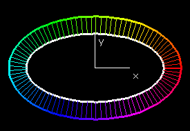

2.1: Basic PropertiesDefinition 2.1.1: Closed CurveDefinition 2.1.1: Simple CurveCircle, Ellipse, and Cardioid for k ≥ 1 or k ≤ –1 2.2: Rotation IndexProposition 2.2.1: Rotation Index of a CurveDefinition 2.2.4: Degree of a MappingDefinition 2.2.7, Proposition 2.2.8: Winding Number2.3: Isoperimetric InequalityTheorem 2.3.1: Isoperimetric Inequality2.4: Curvature, Convexity, and the Four-Vertex TheoremDefinition 2.4.2: ConvexCircle, Ellipse, and Cardioid for k ≥ 2 or k ≤ –2 Page 65 and Figure 2.5: Height FunctionTheorem 2.4.5: Four-Vertex TheoremProblem 2.4.4: Parallel Curves
 |